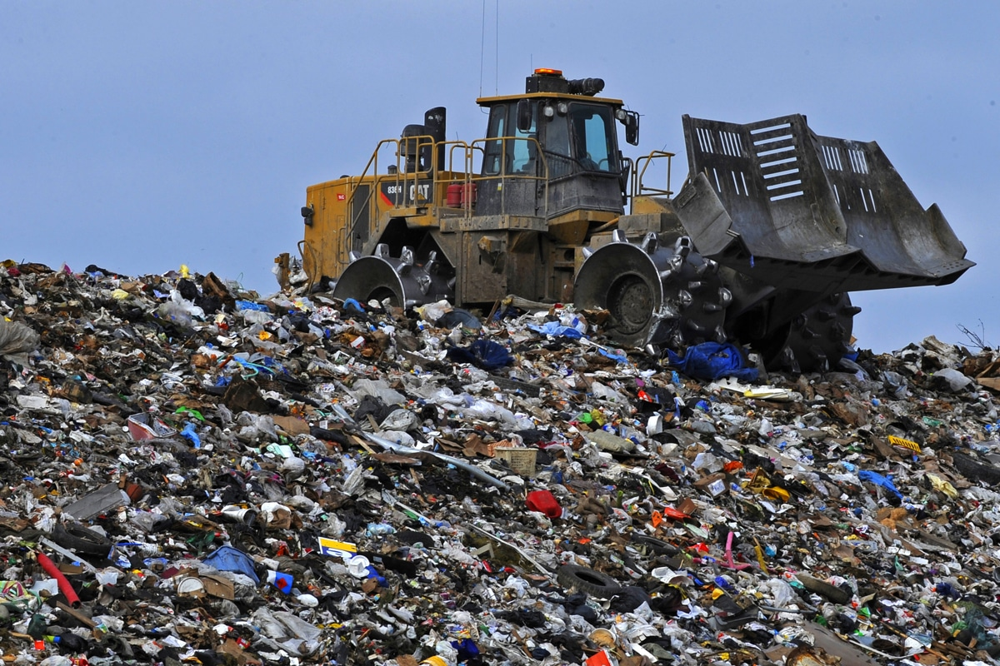
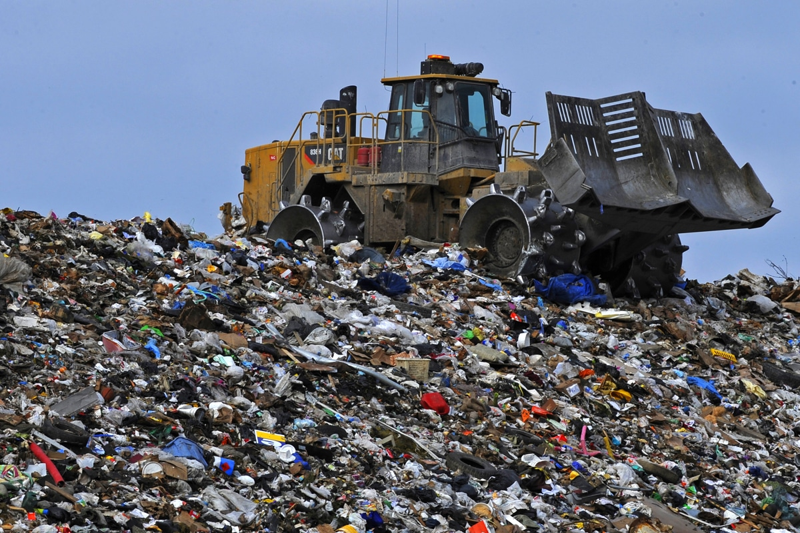

O solo é a camada de material orgânico e inorgânico que cobre a superfície rochosa da terra. A porção orgânica, derivada da decomposição de animais e plantas, concentra-se na parte superior do solo. Já a parte inorgânica é formada por fragmentos de rochas. A água e o ar também estão presentes no solo e suas concentrações variam de acordo com a ocorrência de chuvas. Em geral, os lixos doméstico, industrial e rural têm em sua composição uma variedade de produtos químicos prejudiciais ao meio ambiente. Esse lixo é degradado e resulta na produção de chorume, que é um líquido altamente tóxico. Os depósitos de lixo, feitos de forma não sanitária, acabam deixando esse chorume vazar. Nesse processo, ele contamina o solo e atinge os lençóis freáticos. Também pode haver contaminação do solo por despejo de material radioativo ou lixo hospitalar.
 
